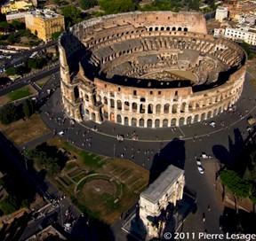
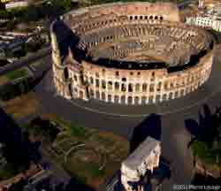
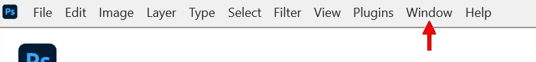
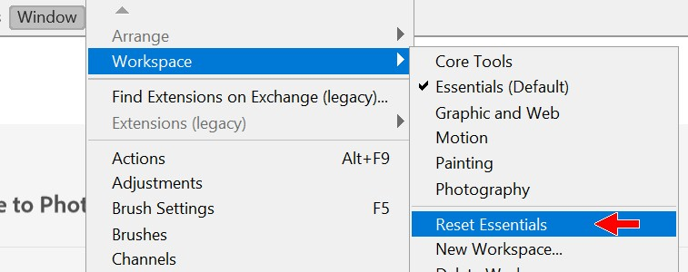
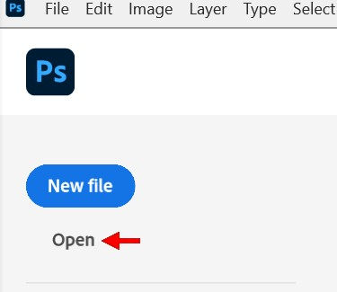
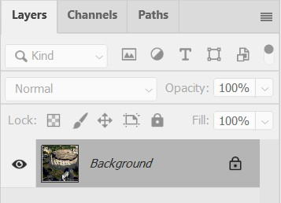
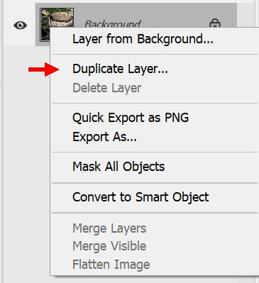
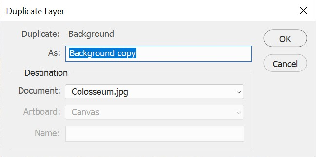
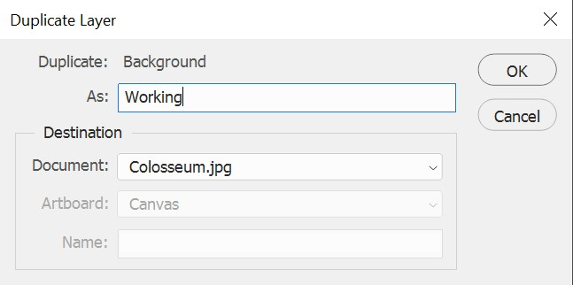
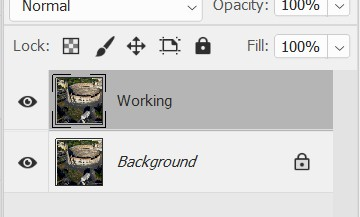

|
Introduction | Method
1: Brush/Pencil | Method 2: Spot Healing Brush |
Method 3: Healing Brush | Method
4:
Patch | Method 5: Content-Aware Move |
| Removing Objects with Photoshop - Introduction |
One of the most common uses for Photoshop is to remove objects from images. Photoshop has a variety of methods to allow you to pull this off. For example, let's say that you want a picture of the Roman Colosseum but you don't want to capture any of the people walking around - you just want the building. One thing you could do is use an option in Photoshop called image stacks. This allows you to set up a camera and take multiple pictures of the building over time and then combine the individual images so that only the areas with no people in them in each image is used to build your people-free photo. I know - cool.
Image stacks are great, but only work if you have multiple images from a single spot. What if you only have a single image? In this lesson, we will look at nine different methods (ten if we combine multiple methods) to remove objects from an image in Photoshop. We will start with an aerial shot of the Roman Colosseum littered with tourists and cover multiple ways to remove the people so that all we are left with is the building itself. We will go from this...

To this...

Note that the people and vehicles are missing from the bottom picture. We will work together to cover various ways to remove items, and then you will work on your own to complete the removal of the people and various other objects. When we finish these instructions, you will select an image of your own from a group of aerial photos and work independently to remove the people and objects from it using what you have learned in this lesson.
|
Keep in mind that while we will be using Photoshop's tools to clean up an aerial photo of a landmark, that the techniques we will cover can be used to remove anything from any image. Got a picture with a pole in the background that looks like it is coming out of your head? No problem. Does it turn out there was a person walking through your fantastic beach photo? Piece of cake. No longer dating that loser and want to remove them from your vacation photos? Can do. When you finish this lesson, removing any object from any image will not be a problem. |
Note that this tutorial assumes that you have used Photoshop before and are familiar its basic function and thus will not spend time on getting you familiar with the Photoshop environment. If you have never used Photoshop before, you should stop this tutorial now and work through a Photoshop basics tutorial so that you can learn the various parts of the interface and all of Photoshop's basic functions. You will get much more out of this tutorial if you are not lost.
Let's get started by getting the picture we will be using open in Photoshop.
Before we open our image, let's reset the Photoshop workspace to make sure that everyone sees the same thing and everything is in the same place.



Photoshop gives us nine basic ways to remove items in an image (ok, full disclosure time here: there are actually a few more ways, but they require specific editing that goes beyond simply removing an object or require the use of multiple images, and since we only have a single image, we'll go with these):
Don't worry if the above descriptions are vague and difficult to follow - they are simply an overview. When you have experience using each tool, everything will make sense.
Below is a reference table for how each of the nine options work, to help you decide when to use each:
Brush/Pencil |
Spot Healing Brush |
Healing Brush |
Patch Tool |
Content-Aware Move |
Content Aware Fill |
Remove Tool |
Generative Fill |
Clone Stamp Tool |
|
Blending of colors |
No |
Yes |
Yes |
Yes |
Yes |
No |
No | No | No |
Requires sample |
No |
No |
Yes |
No |
No |
No |
No | Yes | Yes |
Requires selection |
No |
No |
No |
Yes |
Yes |
Yes |
Yes | Yes |
No |
Requires selection move |
No |
No |
No |
Yes |
Yes |
No |
No | No | No |
| Safe near an edge | Yes | No | No | Yes | Yes | Yes | Yes | Yes | Yes |
Uses Artificial Intelligence |
No | No | No | No | No | No | Yes | Yes | No |
No two tools work the same and there are a wide variety of possible tools and uses. While the table makes it look like some tools do work the same, how they pull off the removal is unique to each. To learn how each of these tools work - and more importantly when it is most efficient to use each one - we will work with our image of the Colosseum to practice each tool.
Before we actually start editing our image, let's make a copy of the Background layer that contains our Colosseum image. It is generally a bad idea to make edits that destroy part of an image (called 'destructive editing') without having a way to get parts back to the original form and fix mistakes. There are several different methods in Photoshop to allow us to make edits without destroying areas of the image (called 'non-destructive editing'), but one of the quickest and easiest ways is to simply make a copy of the image layer and make all of our edits on the new layer. Let's do that now.
In the Layers panel, make sure the Background
layer is selected (you only have one layer, so it must be selected)...

Right-click the Background layer and in the
pop-up menu click Duplicate Layer...


In the As: field, change the name to Working...

Click OK - notice that Photoshop creates the new
layer for you in the Layers panel...

Let's save our image as a Photoshop file.
Each of the following 10 Tutorial Steps of this lesson are short and designed to give you quick experience using a specific tool/technique. You will get an opportunity to practice with each tool/technique when you reach Method 10: Combining Tools where you will remove the remaining people from the Colosseum image, and then work with another image before you submit both to be graded.
|
Keep something very important in mind as you go thru this project:
Our goal here is to be able to remove objects from images WITHOUT VIEWERS BEING ABLE TO TELL THAT ANYTHING WAS REMOVED.
Have a look at this image: Just looking at it, can you tell what has been removed and from where? Don't cheat and scroll down, actually look at the image and see if you can tell what has been changed. When you think you know, go ahead and scroll down to take a look at the original image...
Keep scrolling...
A little more...
Scroll scroll scroll...
Almost there...
Here it is...
Now be honest - how many of you thought that an entire SUV was missing? The disappearing vehicle was actually pulled off by Jesus Ramirez, and as you can see, he did a great job (I did some adjustments here and there to make it look really awesome). This is the level of quality we are shooting for - the viewer of the image should be unable to tell that anything was edited out of the photo. As you work thru this project (and when working on the exercises that follows), keep in mind that you NEVER want it to be obvious that something has been removed. If it is obvious that the image has been edited, it takes you out of being immersed in the image, kind of like when someone in a movie looks at the camera. We are shooting for realism, so take the time to make it look good. |
In the next step, Method 1: Brush/Pencil, we will use the Brush/Pencil tool to make some basic adjustments.